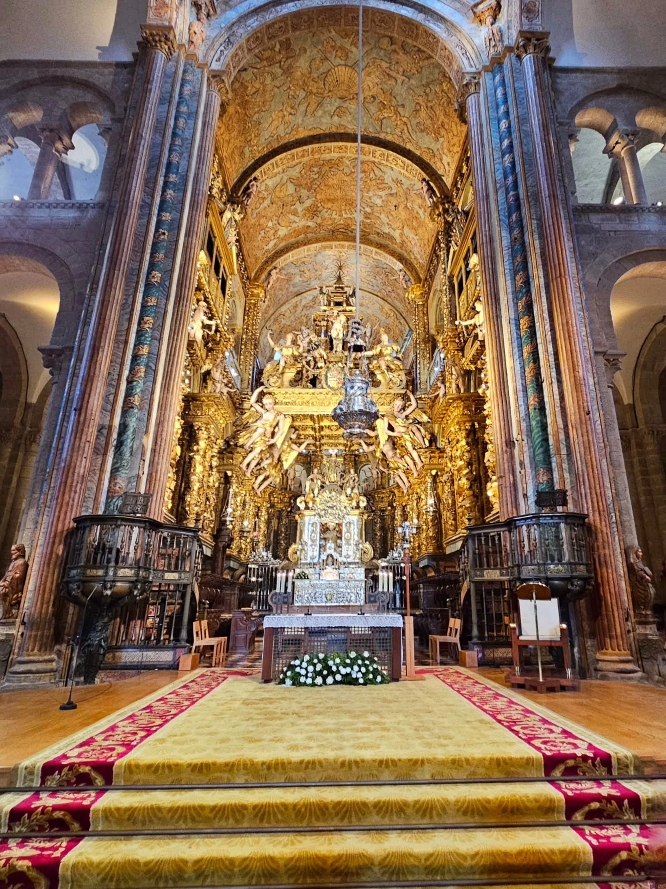
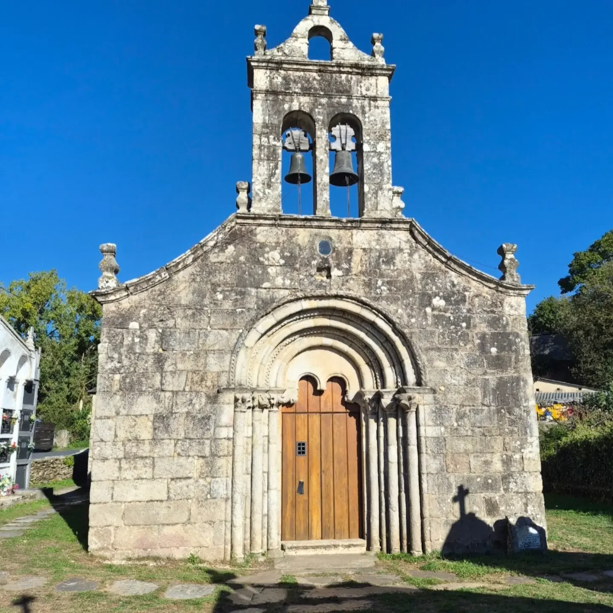

2027 es Año Santo Compostelano, también llamado Año Santo Jacobeo o Xacobeo. Se celebra porque el 25 de julio de 2027, fiesta del apóstol Santiago, cae en domingo. Durante todo el año, la Puerta Santa de la Catedral de Santiago de Compostela está abierta y los peregrinos pueden ganar el jubileo, es decir, la indulgencia plenaria.
En esta guía te explicamos por qué 2027 es especial, cuándo se abre la Puerta Santa, cómo ganar el jubileo, en qué se diferencia de la Compostela y cómo peregrinar a Santiago desde Estados Unidos. Nuestra peregrinación al Camino de Santiago y Ávila, del 10 al 20 de septiembre de 2027, llega a Santiago en pleno Año Santo.
Peregrina con nosotros en el Año Santo
- Fechas:
- del 10 al 20 de septiembre de 2027.
- Recorrido:
- Madrid, Segovia, Lugo, Sarria, Santiago de Compostela, Salamanca y Ávila.
- El Camino a pie:
- seis etapas del Camino Francés, de Sarria a la Catedral de Santiago: los últimos 100 km del Camino, unos 115 km en total (aprox.), con traslado de mochilas entre etapas.
- Acompañamiento:
- un sacerdote, con Misas del Peregrino durante el Camino y en la Catedral.
- Salidas:
- desde cualquier ciudad de Estados Unidos o desde cualquier parte del mundo. Llegada y regreso por el aeropuerto de Madrid; te cotizamos el vuelo desde tu ciudad.
¿Por qué 2027 es Año Santo Compostelano?
El Año Santo se celebra cada vez que el 25 de julio, fiesta del apóstol Santiago, cae en domingo. Por eso se repite con una cadencia irregular de 6, 5, 6 y 11 años: después de 2027, los próximos serán en 2032, 2038 y 2049. Si quieres peregrinar en un Año Santo, 2027 es la única oportunidad en los próximos cinco años.
¿Qué significa Año Santo? Es un año jubilar, un tiempo de gracia en el que la Iglesia concede la indulgencia plenaria a quienes peregrinan a la tumba del Apóstol. Se le llama Compostelano por Santiago de Compostela y Jacobeo (en gallego, Xacobeo) por Santiago, Iacobus en latín. Los Años Santos anteriores fueron 2004, 2010 y 2021, que se extendió a 2022 por la pandemia.
Según la tradición, la Catedral de Santiago de Compostela guarda la tumba del apóstol Santiago el Mayor, uno de los doce apóstoles. Desde la Edad Media, peregrinos de toda Europa, y hoy de todo el mundo, caminan hasta su sepulcro.

Fechas clave del Año Santo 2027
- 31 de diciembre de 2026, a mediodía (hora de España): apertura de la Puerta Santa y comienzo del Año Santo. Son las 6:00 a. m. hora del Este de Estados Unidos.
- 25 de julio de 2027: fiesta del apóstol Santiago, que este año cae en domingo.
- 10 al 20 de septiembre de 2027: nuestra peregrinación al Camino de Santiago y Ávila.
- 31 de diciembre de 2027: cierre de la Puerta Santa y fin del Año Santo.
Apertura de la Puerta Santa: cuándo se abre y dónde está
La Puerta Santa está en la plaza de la Quintana, en la parte posterior de la Catedral, y solo se abre en los Años Santos. El arzobispo de Santiago la abre en una ceremonia solemne el 31 de diciembre de 2026 a mediodía, hora de España: las 6:00 a. m. hora del Este de Estados Unidos (3:00 a. m. hora del Pacífico). El Arzobispado adelantó la ceremonia unas cinco horas respecto a los Años Santos recientes. La Puerta queda abierta durante todo 2027, hasta que otra ceremonia la cierra el 31 de diciembre de 2027.
Cruzar la Puerta Santa es uno de los gestos más queridos del Año Santo, aunque no es una de las condiciones para ganar el jubileo.
Cómo ganar el jubileo: la indulgencia plenaria en Santiago de Compostela
Durante el Año Santo Compostelano, la indulgencia plenaria se puede ganar cumpliendo estas condiciones:
- Visitar la Catedral de Santiago, donde está la tumba del Apóstol, y rezar allí: al menos el Credo y el Padrenuestro, y una oración por las intenciones del Papa.
- Confesarse dentro de los quince días antes o después de la visita.
- Comulgar.
La indulgencia se puede aplicar por uno mismo o por las almas del Purgatorio. No hace falta haber caminado el Camino para ganarla: basta con peregrinar a la Catedral y cumplir las condiciones. En nuestra peregrinación, las Misas del Peregrino durante el Camino y en la Catedral te ayudan a vivirlas con calma.
Compostela y jubileo: no son lo mismo
- La Compostela es el certificado que entrega la Oficina del Peregrino a quien recorre a pie al menos los últimos 100 km del Camino, con al menos dos sellos por día en la Credencial del Peregrino durante ese tramo.
- El jubileo es la indulgencia plenaria del Año Santo: una gracia espiritual que se gana cumpliendo las condiciones de arriba. No exige caminar.
En 2027 puedes vivir las dos cosas: al caminar desde Sarria cumples la distancia de la Compostela, y al llegar a la Catedral puedes ganar el jubileo.
¿Qué pasa en el Camino en 2027? Más peregrinos y cuándo reservar
El Camino vive años de récord. Según los datos de la Oficina del Peregrino, en 2025 llegaron a Santiago más de 530.000 peregrinos; Estados Unidos fue el país extranjero con más peregrinos, más de 44.000, y septiembre fue el mes con más llegadas. Además, el 71 % de los peregrinos estadounidenses tenía 46 años o más.
En un Año Santo se espera todavía más gente, sobre todo en verano y en las fechas más señaladas, así que conviene reservar con varios meses de antelación, sobre todo si quieres caminar en septiembre, el mes con más peregrinos. Viajar en grupo te asegura alojamiento y transporte organizados de antemano.
Caminar de Sarria a Santiago: los últimos 100 km
Sarria es el punto de partida más elegido porque, desde allí, el Camino a Santiago suma unos 115 km: algo más de los 100 km mínimos para la Compostela. El tramo pasa por aldeas gallegas, bosques de robles y castaños y pueblos como Portomarín, Palas de Rei, Melide, Arzúa y O Pedrouzo.
En nuestra peregrinación lo recorremos en seis etapas, a paso tranquilo y con traslado de mochilas entre etapas, para que cada peregrino camine solo con lo necesario para el día. Es una experiencia pensada para peregrinos de todas las edades, también para quienes caminan por primera vez.

Consejos para caminar el Camino en septiembre
- Calzado ya usado: no estrenes zapatos en el Camino; camina con ellos unas semanas antes del viaje.
- Impermeable ligero: en Galicia puede llover incluso en septiembre.
- Ropa por capas: las mañanas suelen ser frescas y los mediodías, templados.
- La Credencial del Peregrino: sella al menos dos veces por día desde Sarria para pedir la Compostela.
- Intenciones: lleva escritas las intenciones de tu familia y de quienes te las encomienden, para presentarlas ante el Apóstol.
Peregrina en grupo desde Estados Unidos
Además del Camino, nuestra peregrinación de septiembre de 2027 recorre Madrid, el acueducto y el Alcázar de Segovia, la muralla romana de Lugo, la ciudad universitaria de Salamanca y Ávila, la ciudad de Santa Teresa de Jesús. Viajas acompañado por un sacerdote, con Misas del Peregrino y todo organizado, para que te dediques a vivir el Año Santo.
Si es tu primera vez, lee nuestra guía para tu primera peregrinación católica y por qué peregrinar acompañado por un sacerdote cambia la experiencia. También puedes ver todas nuestras peregrinaciones católicas desde Estados Unidos en 2027.
Vive el Año Santo Compostelano con nosotros. Del 10 al 20 de septiembre de 2027 caminaremos de Sarria a Santiago acompañados por un sacerdote, y visitaremos Madrid, Segovia, Lugo, Salamanca y Ávila. Puedes unirte desde cualquier ciudad del país —Los Ángeles, Nueva York, Houston, Chicago o la tuya— o desde cualquier parte del mundo. Escríbenos por WhatsApp y te enviamos los detalles.
💬 Escribirnos por WhatsApp Ver la peregrinación al Camino de Santiago 2027Fuentes: CaminoWays: Año Santo Jacobeo 2027; ACI Prensa: condiciones para lucrar la indulgencia plenaria del Año Santo; El Debate: la Puerta Santa de la Catedral de Santiago; Oficina del Peregrino: la Credencial y los sellos (en inglés); Viaje Camino de Santiago: estadísticas de la Oficina del Peregrino 2025; American Pilgrims on the Camino: estadísticas (en inglés); Diario de Santiago: la Puerta Santa se abrirá a mediodía; ACI Prensa: el arzobispo de Santiago invita al Papa León XIV al Año Santo 2027.